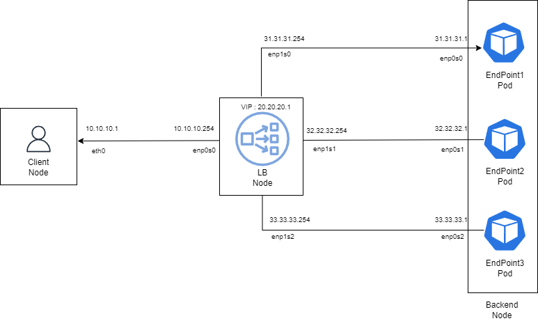
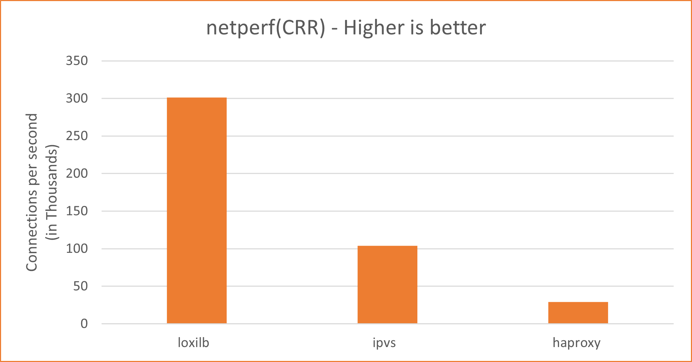
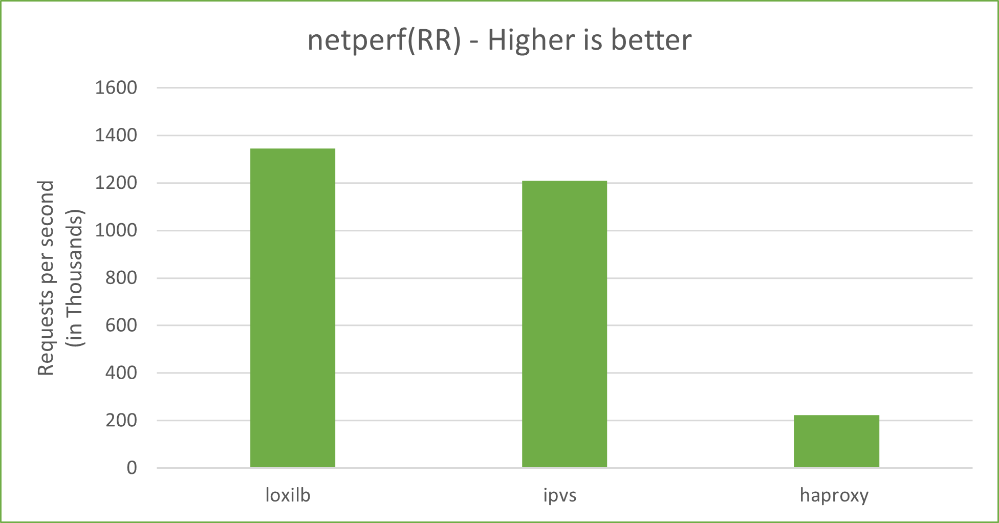
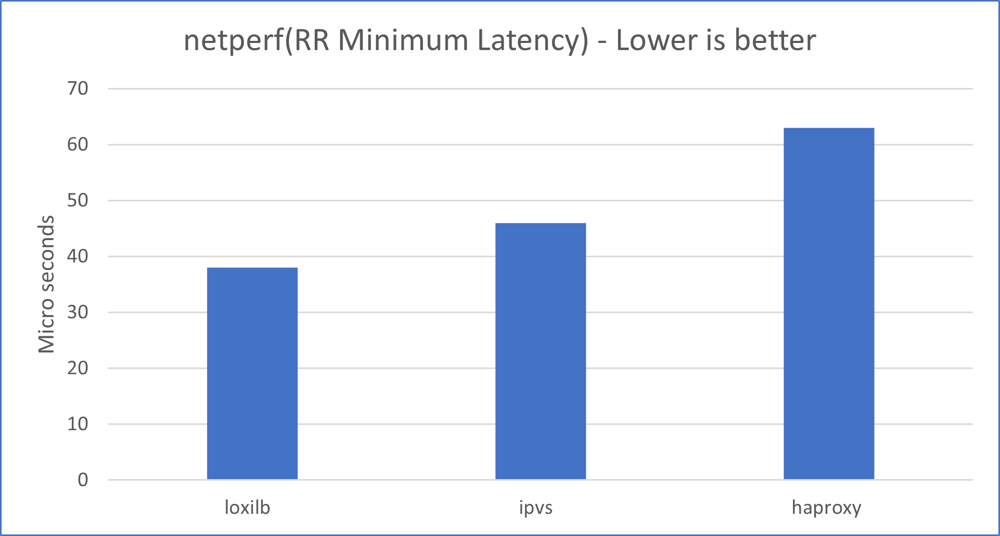
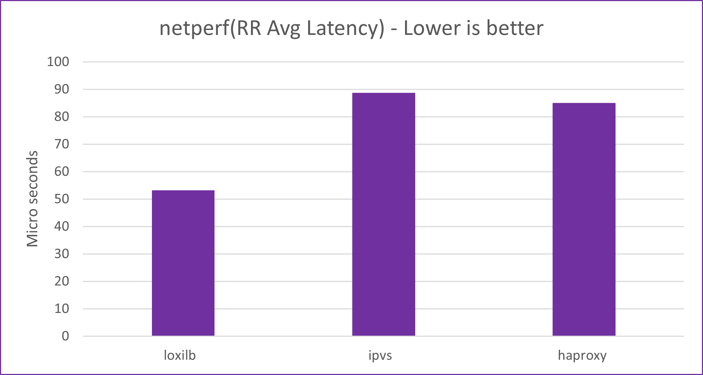

Perf multi
Bare-Metal Performance
The topology for this test is as follows :

In this test, all the hosts, end-points and load-balancer run in separate dedicated servers/nodes. Server specs used - Intel(R) Xeon(R) Silver 4210R CPU @ 2.40GHz - 40 core RAM 125GB, Kernel 5.15.0-52-generic. The following command can be used to configure loxilb for the given topology:
# loxicmd create lb 20.20.20.1 --tcp=2020:5001 --endpoints=31.31.31.1:1,32.32.32.1:1,33.33.33.1:1
We run popular tool netperf for the above topology. A quick explanation of terminologies used :
RPS - requests per seconds. Given a fixed number of connections, this denotes how many requests/message per second can be supported
CPS - connections per second. This denotes how many new TCP connection setup/teardowns can be supported per second and hence one of the most important indicators of load-balancer performance
CRR - connect/request/response. This is same as CPS but netperf tool uses this term to refer to CPS as part of its test scenario
RR - request/response. This is another netperf test option. We used it to measure min and avg latency
We are comparing loxilb with ipvs and haproxy.
The results are as follows :
Connections per second (TCP_CRR)

Requests per second (TCP_RR)

Minimum Latency

Average Latency

Conclusion/Notes -
- loxilb provides enhanced performance across the spectrum of tests. There is a noticeable gain in CPS.
- loxilb's CPS scales linearly with number of cores
- haproxy version used - 2.0.29
- netperf test scripts can be found here